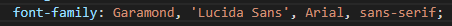
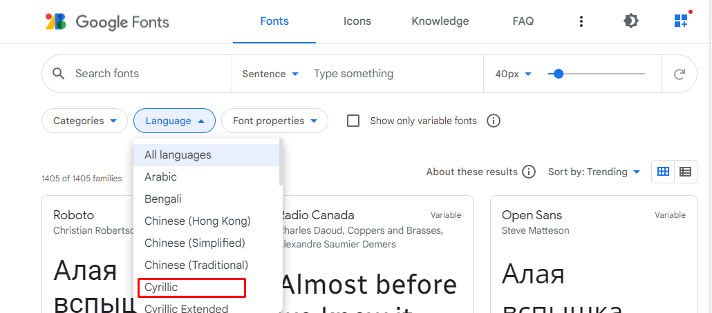
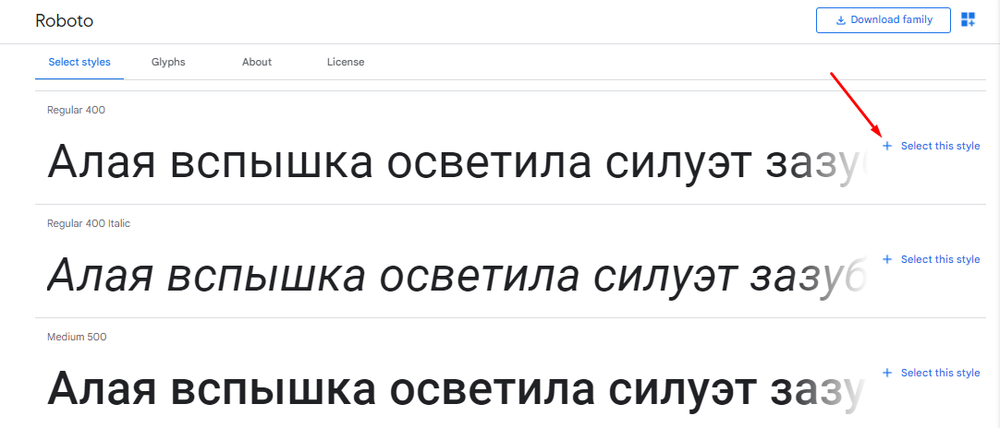
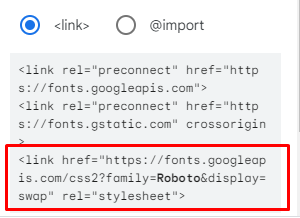
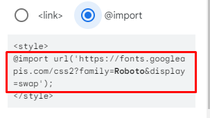
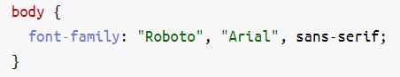
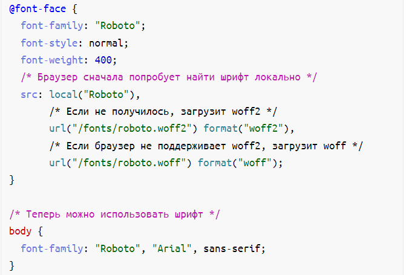
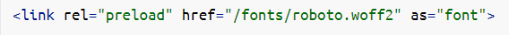
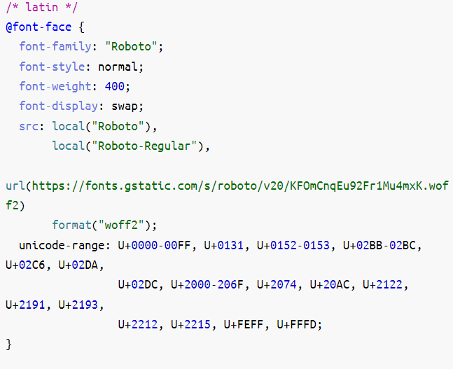
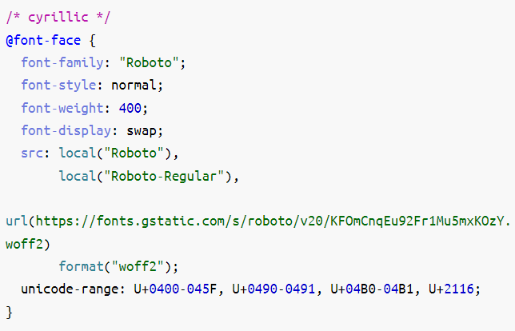

Подключение шрифтов
Существуют тысячи шрифтов, которые предназначены для оформления текстов. При этом следует отметить, что число шрифтов, применяемых для набора текста на сайтах, существенно ниже. Конечно, ничто не мешает выбрать и задать, например, для заголовка, вычурный шрифт, установленный на локальном компьютере. Но если такого шрифта на компьютере пользователя нет, то текст будет отображаться шрифтом, установленным в браузере по умолчанию. Получается, что усилия разработчика пропадут даром.
Есть три способа избежать этого:
-
Создать надпись в графическом редакторе и вставить её на веб-страницу как изображение.
Этот метод подключает всю мощь графических систем по управлению текстом, при этом допустимо включать любые шрифты. Из недостатков самый главный состоит в том, что рисунок так просто не изменишь, и придётся вновь обращаться к редактору. Так что рисунки в качестве текста применяются только для создания небольших и постоянных надписей вроде заголовков. -
Загрузить пользовательский шрифт.
Действительно, если можно загружать по сети изображения, почему бы то же самое не проделать и со шрифтами? -
Воспользоваться стандартными шрифтами, встроенными в браузер и операционную систему.
Этот способ является пока наиболее распространённым для указания шрифта на веб-странице.
Подключение стандартных шрифтов
Самый простой вариант — вообще не подключать сторонние шрифты и пользоваться стандартными, которые предустановлены в большинстве операционных систем. Поскольку они установлены на каждом устройстве, мы можем свободно использовать эти шрифты на наших сайтах, зная, что независимо от того, какое устройство просматривает наш сайт, шрифт будет отображаться правильно.
Эти шрифты известны, как «безопасные веб-шрифты». Достаточно просто указать название одного из таких шрифтов в коде, и всё будет работать. Таких шрифтов немного и наиболее надёжные перечислены здесь:
- Arial
- Courier New, Courier
- Garamond
- Georgia
- Lucida Sans, Lucida Grande, Lucida
- Palatino Linotype
- Tahoma
- Times New Roman, Times
- Trebuchet
- Verdana
Выбор шрифта для оформления текста осуществляется через стилевое свойство font-family.
Оно устанавливает семейство шрифтов, которое будет использоваться для оформления текста. Список шрифтов может включать одно или несколько названий, разделённых запятой. Если в имени шрифта содержатся пробелы, например, Times New Roman, оно должно заключаться в двойные или одинарные кавычки.
Когда браузер встречает первый шрифт в списке, он проверяет его наличие на компьютере пользователя. Если такого шрифта нет, берётся следующее имя из списка и также анализируется на присутствие. Заканчивают список обычно ключевым словом, которое описывает тип шрифта — serif , sans-serif или cursive.

Но, очень часто, дизайн макета не позволяет обойтись веб-безопасным шрифтом, а требует использовать какой-то нестандартный.
В этом случае при загрузке страницы файл со шрифтом нужно подгружать с сервера ( с компьютера ) по той же схеме, что и остальные ресурсы — CSS-файлы, изображения и т.д. Он может весить довольно много, именно поэтому для быстрой загрузки страницы выгоднее сначала рассмотреть возможность использования стандартных шрифтов.
Подключение шрифтов с помощью Google Fonts
Google Fonts - самый простой и удобный способ подключить нестандартный шрифт. Это бесплатный сервис, с помощью которого можно подключать шрифты, но не хранить их на своём сервере.
Хотя в коллекции сравнительно мало разных шрифтов (их несколько десятков), все они подобраны очень качественно и свободны для использования на сайтах.
Перед выбором шрифта переключите значение Language на Cyrillic, тогда вы увидите список шрифтов поддерживающих русский язык

Далее необходимо выбрать шрифт и добавить одно или несколько нужных начертаний

Подключить выбранные шрифты можно одним из путей:
- Через элемент <link>. Скопировать, а затем вставить в <head> строку, которую сгенерирует Google Fonts в боковой вкладке Link
- Через правило @import. Скопировать, а затем вставить в свой CSS-файл в самом верху строку, которую сгенерирует Google Fonts в боковой вкладке @import
 
Этого достаточно, чтобы шрифт подключился. Теперь его можно использовать в свойстве font-family без каких-либо дополнительных действий.

Стоит отметить, что после основного шрифта важно указать веб-безопасный. В случае, если нестандартный шрифт не загрузится, браузер воспользуется альтернативным. Его нужно подобрать максимально похожим на основной шрифт.
Плюсы этого способа — простота использования и всегда актуальные версии шрифтов, Google Fonts их часто обновляет. Но у него есть и минус — запросы к сторонним серверам могут негативно повлиять на скорость загрузки страницы. Если выбираете этот способ, стоит обратить внимание на оптимизацию.
Подключение шрифтов с помощью правила @font-face
Есть альтернативный способ, при котором файлы со шрифтами хранятся вместе с остальными ресурсами сайта. Для них принято заводить отдельную директорию в корне проекта — например, fonts. В неё следует поместить файлы для каждого начертания в нужных форматах — в большинстве случаев, если не требуется поддержка старых браузеров, подойдут .woff и .woff2
TTF и OTF — форматы, которые предоставляются с минимальным сжатием или совсем без него. Их стоит использовать только в том случае, если нужна поддержка очень старых браузеров.
Во всех остальных ситуациях можно выбрать WOFF и WOFF2 — форматы, которые отличаются высокой степенью сжатия. WOFF2 — усовершенствованная версия предшественника, этот формат можно считать лучшим из существующих. Тем не менее, поддержка WOFF2 хотя и очень хорошая, но пока не абсолютная. Поэтому в качестве подстраховки для не самых современных браузеров стоит использовать WOFF.
Шрифты можно скачать на различных ресурсах. При этом всегда нужно обращать внимание на лицензию — некоторые шрифты могут быть недоступны для коммерческого использования.
После того, как шрифты добавлены в проект, их нужно подключить в CSS-файле. Для этого используется правило @font-face. В самом базовом варианте оно будет включать:
-
Название шрифта, которое затем нужно использовать, чтобы задать элементам подключённый шрифт.
-
Адрес файла со шрифтом, который нужно подключить, и его формат. Если адресов несколько, их можно указать через запятую. В этом случае важен порядок — браузер будет последовательно пытаться подключить файлы. Первым должен быть самый подходящий формат, а далее — запасные варианты.
Также с помощью функции local можно добавить возможность перед загрузкой шрифта с сервера проверить, установлен ли он на компьютере пользователя. Если да, запроса к серверу за шрифтом не будет — при рендеринге используется локальная версия. Но у этого способа есть минус — шрифт на компьютере пользователя может быть устаревшим, и тогда страница отобразится не совсем так, как было задумано.
- Начертания: жирное, курсивное и так далее. Для каждого начертания нужно отдельное правило @font-face.
Базовый вариант правила:

Для улучшения производительности правило @font-face лучше всего прописывать в самом начале CSS-файла. Так браузер сможет раньше начать обработку шрифта.
Оптимизация
Выбор современного формата шрифта, который обладает хорошей степенью сжатия — это только первый шаг к оптимизации. Можно сделать гораздо больше, чтобы увеличить скорость загрузки страницы и сделать пользовательский опыт при взаимодействии с интерфейсом приятнее.
FOIT, FOUT и FOFT
Пока шрифт загружается, при рендеринге можно наблюдать разное поведение текста:
FOIT (англ. Flash of Invisible Text — «мелькание невидимого текста»).
При таком поведении, пока шрифт не загрузится, текст не отображается и появляется только после загрузки шрифта. Значительная проблема — во время загрузки нет доступа к текстовому контенту.
FOUT (англ. Flash of Unstyled Text — «мелькание неоформленного текста»).
Во время загрузки используется шрифт, заданный по умолчанию (системный, например), а после загрузки страница перерисовывается с использованием загрузившегося шрифта. Эта перерисовка довольно заметна и может быть нежелательна.
FOFT (англ. Flash of Faux Text — «мелькание синтезированного текста»).
Это поведение можно наблюдать в промежутке, когда основное начертание уже загрузилось, а дополнительные (жирное, курсивное и т.д.) — нет. Браузер имитирует нужное начертание до загрузки настоящей версии. В этом случае страница может перерисовываться несколько раз по мере загрузки начертаний.
В разных браузерах логика рендеринга текста во время загрузки шрифта отличается. Например, Chrome и Firefox в течение трёх секунд не отрисовывают ничего, затем используют веб-безопасный шрифт, а после окончания загрузки текст перерисовывается. IE поступает похоже, но при этом не ждёт три секунды.
Подобное поведение в разных браузерах можно унифицировать, используя свойство font‑display.
font‑display
У свойства есть несколько значений, которые определяют поведение текста во время загрузки шрифта:
auto — поведение по умолчанию, зависит от браузера.
block — текст не отображается в течение короткого периода (3 секунды), затем отрисовывается запасной шрифт, если основной ещё не загрузился. Как только загрузка завершается, текст перерисовывается снова.
swap — сразу же отрисовывается запасной шрифт, после загрузки шрифта — повторный рендеринг.
fallback — в течение очень короткого периода (100 миллисекунд) не отображается ничего, затем браузер использует запасной шрифт и ждёт 3 секунды — если шрифт всё ещё не загрузился, остаётся запасной шрифт. Далее не важно, загрузился шрифт или нет, замена не произойдёт. Если шрифт загрузится, то он применится только при обновлении страницы.
optional — текст не отображается в течение 100 миллисекунд, а затем отрисовывается запасным шрифтом. Даже если шрифт загрузится после этого, замена произойдёт только при обновлении страницы.
Оптимальное значение — swap , его можно использовать в большинстве случаев, оно удобно для пользователей. При подключении шрифта с помощью Google Fonts это значение установлено по умолчанию. Если же есть необходимость избежать мелькания текста (например, для вдумчивого чтения), подойдёт optional .
Предзагрузка шрифтов
Ещё один способ оптимизации — предварительная загрузка шрифтов. С её помощью можно изменить обычную приоритезацию загрузки ресурсов, тем самым сказав браузеру, что важно загрузить шрифт в первую очередь.
Стоит учесть, что браузер загрузит шрифт в любом случае — даже если он не используется на странице. И, обладая высоким приоритетом, эта загрузка может блокировать загрузку других ресурсов, поэтому нужно грамотно выбирать, что именно предзагружать. Например, если на странице используются три разных шрифта, стоит предзагрузить только основной шрифт без дополнительных начертаний.
Для того, чтобы предзагрузка сработала, нужно поместить в <head> ссылку на шрифт и задать атрибуту rel значение preload:

Также необходимо добавить тип ресурса, в данном случае — font. Предзагружать можно и другие ресурсы — CSS-файлы, изображения и т.д.
Уменьшение количества глифов шрифта
По умолчанию шрифт может содержать глифы (буквы, символы) разных языков и просто редко используемые.
unicode-range
С помощью свойства unicode-range можно установить диапазон нужных символов в системе Unicode, тогда браузер будет подгружать сабсет (подмножество) шрифта только в тот момент, когда на странице появится символ из этого диапазона. Предварительно нужно подготовить файлы шрифтов, разбив их на группы.
Например, можно отдельно подключить латиницу и кириллицу, если на сайте представлены версии на двух языках. И с помощью unicode-range браузер поймёт, какой сабсет нужен для конкретной страницы, и загрузит только его. Такой файл будет иметь меньший вес и ускорит загрузку страницы.
Также можно проанализировать, какие конкретно глифы используются на сайте и создать кастомный сабсет исключительно с ними. Для этого есть специальные инструменты.
Google Fonts по умолчанию использует сабсеты. Это можно увидеть, открыв CSS-файл, который подключается в <head> при использовании сервиса. Для каждого языка есть отдельный сабсет. Пример для латиницы и кириллицы:
 
В статье разобраны только базовые способы оптимизации шрифтов. Но даже их достаточно, чтобы улучшить пользовательский опыт и значительно уменьшить вес файлов шрифтов, ускорив тем самым загрузку страницы.
Полезности
➤ HTML шорты: посторонние шрифты.
Про подключение шрифтов и методы оптимизации.
➤ Статья о font-display.
В ней кроме прочего приведена наглядная схема того, как работают все значения свойства.
➤ Исчерпывающее руководство по стратегиям загрузки веб-шрифтов.
Подробный разбор плюсов и минусов методов подключения и оптимизации шрифтов.
➤ Оптимизация шрифтов.
В статье разобраны разные методы: использование сабсетов шрифтов в зависимости от языка, HTTP-кеширование, Font Loading API и так далее.
➤ Доклад Вадима Макеева про шрифты.
➤ Subsetting Fonts with Glyphhanger.
Статья о том, как использовать инструмент для создания сабсетов.